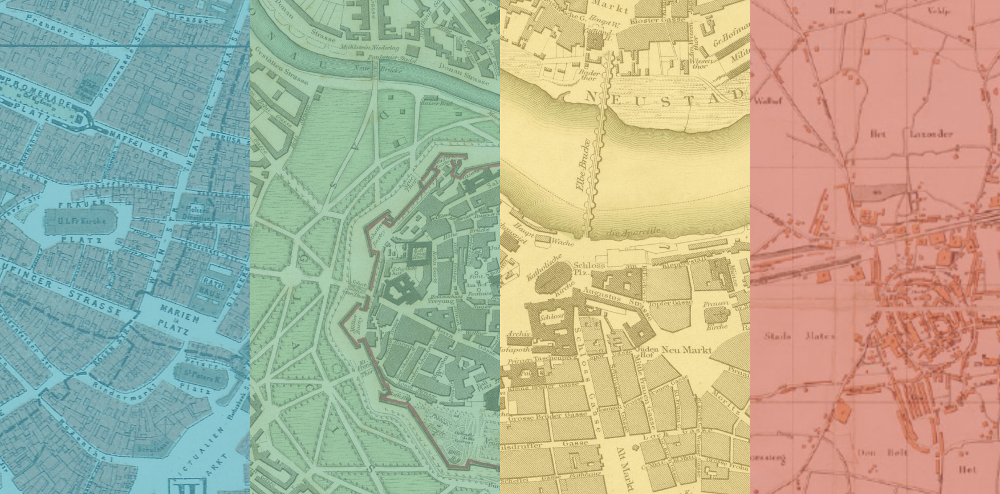

Mapping Urban Evolution
Explore the fascinating transformation of four European cities through interactive historical and modern map comparisons. Discover how urban landscapes have evolved over centuries through detailed cartographic analysis.
Start Exploring →Interactive Comparisons
Side-by-side map slider to compare historical and modern city layouts
Historical Context
Detailed summaries of urban development through different centuries
Four European Cities
Munich, Vienna, Dresden, and Enschede—each with unique urban stories